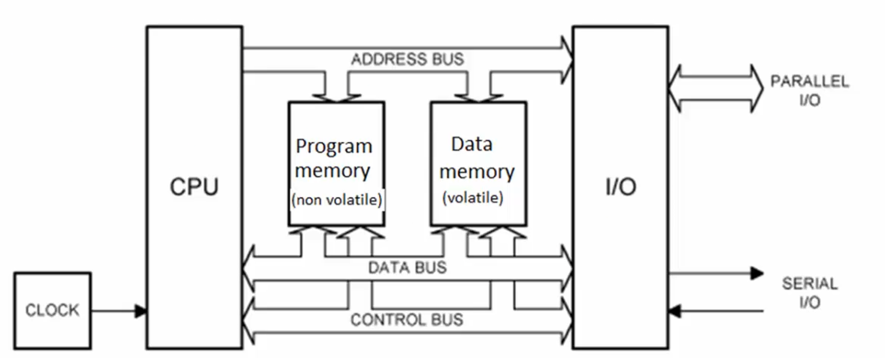

Embedded Programming
CPU (Central Processing Unit)
- Mikrodenetleyici veya bilgisayarın “beyni” konumundaki birimdir. Komutları alır, yorumlar ve yürütür.
- ALU (Arithmetic Logic Unit): Aritmetik (toplama, çıkarma, çarpma…) ve mantıksal (AND, OR, XOR…) işlemleri yapar.
- CU (Control Unit): Komutları sırayla okur, gerekli sinyalleri üretir ve diğer birimlerin senkronizasyonunu sağlar.
- Register’lar:
- Çok hızlı, küçük kapasiteli geçici depolama birimleri.
- Örneğin: Program Counter (PC), Status Register (SR), Genel Amaçlı Register’lar (R0–R31).
MPU (Microprocessor Unit)
- Sadece işlemci çekirdeği içerir.
- Harici RAM, ROM ve çevresel birim bağlantısına (GPIO, UART, SPI vb.) ihtiyaç duyar.
- PC’lere veya gömülü uygulamalarda “işlemci kartı” olarak kullanılır.
MCU (Microcontroller Unit)
- Tek bir entegre çipte işlemci çekirdeği + bellek + çevre birimleri (GPIO, timer, ADC, UART, I²C, SPI vb.) barındıran tam donanımlı gömülü sistem bileşenidir.
- Dahili Bellek:
- Flash/ROM: Program kodu depolama
- SRAM: Veri ve stack alanı
- Çevresel Birimler:
- Dijital G/Ç (GPIO)
- Analog‑dijital dönüştürücü (ADC)
- Timers/Counter’lar
- UART, SPI, I²C, CAN, USB vb. haberleşme modülleri
- Avantajları
- Küçük ayak izi, düşük maliyet
- Düşük güç tüketimi (batarya odaklı uygulamalar için ideal)
- Tek kartta tüm bileşenler
| Özellik | MPU | MCU |
|---|---|---|
| İşlemci | Var (yalnızca çekirdek) | Var (çekirdek + çevresel birimler) |
| Bellek | Harici RAM/ROM | Dahili Flash + SRAM |
| Çevresel Birimler | Harici eklentilerle sağlanır | Dahili UART, GPIO, ADC, timer vb. modüller |
| Kullanım Alanı | PC, sunucu, yüksek performans | Gömülü sistem, IoT, otomotiv, endüstri |

ITM (Instrumentation Trace Macrocell)
- ITM, ARM Cortex‑M tabanlı mikrodenetleyicilerde yerleşik olarak bulunan, gerçek zamanlı izleme ve hata ayıklama altyapısıdır:
- Gerçek Zamanlı İzleme: Kodunuzun akışını, fonksiyon çağrılarını veya değişken değerlerini canlı olarak “trace” edebilirsiniz.
- Düşük Gecikme:
SWO(Serial Wire Output) pininden taşan veriyi, sistem performansını etkilemeden aktarır. - Performans Analizi: Zaman damgalı etiketler (timestamps) sayesinde hangi kod bloğunun ne kadar sürdüğünü ölçebilir, darboğazları hızla tespit edebilirsiniz.
- Özelleştirilebilir Paketler: Hem ARM tarafından tanımlı standart trace paketlerini hem de kendi veri formatlarınızı kullanabilirsiniz.
- Kullanım Senaryoları
- Zamanlama hatalarını keşfetme
- Döngü sayımlarını ve iş parçacıkları arasındaki geçişleri izleme
- Kalıcı log alınamayan gerçek zamanlı sistemlerde debug
Cross Compiler (Çapraz Derleyici)
- Bir x86 veya macOS/Windows gibi “geliştirme host” makinenizde çalışıp, farklı bir “hedef” platform (ör. ARM Cortex‑M) için derlenmiş kod üreten derleyicidir. En yaygın örnek:
arm-none-eabi-gcc
│ │ │ └─ gcc (GNU Compiler Collection)
│ │ └─ eabi (Embedded Application Binary Interface)
│ └─ none (OS yok: bare‑metal)
└─ arm (ARM mimarisi)
- Çıktı Dosya Biçimleri
- ELF (.elf): Çalıştırılabilir, simge tablosu ve debug bilgisi içerir. (Linux/Unix standardı)
- HEX (.hex): Intel HEX formatı; her satırda adres + byte dizisi ASCII olarak saklanır. Mikrodenetleyici bootloader’larına uygundur.
- BIN (.bin): Saf makine kodu; hiçbir meta‑veri içermez, doğrudan belleğe veya flash’a yazılır.
- Tipik Derleme Akışı
arm-none-eabi-gcc -c main.c -o main.o→ Derlemearm-none-eabi-ld main.o -T linker_script.ld -o firmware.elf→ Bağlamaarm-none-eabi-objcopy -O ihex firmware.elf firmware.hex→ HEX’e dönüştürmearm-none-eabi-objcopy -O binary firmware.elf firmware.bin→ BIN’e dönüştürme
graph LR
A[main.c] --> |Preprocessor| B{main.i};
B --> |Parser| C[Code generator];
C --> D[main.s];
D --> |Assembler| E[main.o];
E --> |Linker| F[Debug File .elf];
F --> |Objcopy Tool| H["(.bin)"]
G["Other Lib (.a)"] --> |Linker| F["Debug File (.elf)"];RCC (Reset and Clock Control)
RCC, mikrodenetleyicideki tüm modüllere saat (clock) sinyallerini sağlayan ve donanım-software sıfırlama (reset) işlemlerini yöneten merkezi bir birimdir.
- Saat Kaynak Seçimi: Dahili osilatör (HSI), harici kristal (HSE) veya PLL (Phase‑Locked Loop) kullanımı
- Frekans Yapılandırma:
AHB, APB1/APB2gibi bus’lar için bölme (prescaler) değerlerini ayarlar- PLL parametreleriyle sistem saat hızını (SYSCLK) optimize eder
- Güç Tüketimi: Düşük güçlü modlar için clock gating (kullanılmayan modülleri durdurma)
- Reset Yönetimi:
- Sistem reset’i, güç reset’i, bağımsız watchdog reset’i gibi kaynakları kontrol eder
- Her modülün reset bit’ini (örneğin
RCC_APB1RSTR) yazarak o çevresel birimi yeniden başlatır
ISR (Interrupt Service Routine)
Bir kesme (interrupt) oluştuğunda otomatik olarak çağrılan kesme işleyici fonksiyonudur. Ana program akışı duraklar, ISR çalışır, sonra ana programa döner.
-
Giriş ve Çıkış:
- CPU LR (link register) içerisine dönüş adresini kaydeder
- Kesme kaynağı bayrağını temizleyip (ör.
EXTI->PR |= …) ilgili işlemi yapar
-
Kayıt Dağılımı:
- R0–R12 → Genel amaçlı register’lar
- SP (Stack Pointer) → Geçici veri ve ISR dönüş adresi
- LR (Link Register) → ISR öncesi dönüş adresi
- PC (Program Counter) → Bir sonraki yürütülecek komut
SVC (Supervisor Call)
Yazılım kesmesi (svc) aracılığıyla kullanıcı uygulamasından çekirdek veya RTOS hizmetlerine (ör. bellek ayırma, görev oluşturma) erişim sağlar.
SWD (Serial Wire Debug)
ARM Cortex‑M serisinde kullanılan 2 telli (SWDIO, SWCLK) hata ayıklama protokolüdür:
- Düşük pin sayısı ile JTAG’a göre avantajlı
- Gerçek zamanlı bellek okuma/yazma, register izleme
- SWO (Serial Wire Output) ile trace mesajlarını aktarır
JTAG (Joint Test Action Group)
Elektronik bileşenlerin test ve hata ayıklama standardıdır:
- 4 - 5 telli protokol (TCK, TMS, TDI, TDO, TRST)
- Boundary‑scan test, IC programlama, çekirdek debug
- SWD’ın alt kümesi olarak bazı ARM çekirdeklerinde desteklenir
| JTAG | SWD | |
|---|---|---|
| Pin Sayısı | 5-6 pin | 2 pin |
| Temel Pinler | TDI, TDO, TMS, TCK, TRST (opsiyonel) | SWDIO, SWCLK |
| Zincirleme Desteği | Var, birden fazla cihazı zincirleme olarak bağlayabilir | Yok, her cihaz için ayrı bağlantı gereklidir |
| Hız ve Performans | Daha fazla veri iletimi, daha yüksek hız, ancak karmaşık sistemlerde yavaş olabilir | Daha hızlı veri iletimi, düşük pin sayısı ile daha hızlı sonuç alabilirsiniz |
| Karmaşıklık | Daha karmaşık, çok sayıda pin ve yapılandırma gerektirir | Daha basit, düşük pin sayısı ve yapılandırma gerektirir |
| Kullanım Alanları | Daha büyük ve karmaşık sistemler, FPGA'lar, bellekler, CPU'lar | ARM Cortex-M mikrodenetleyiciler, düşük pinli yapılar |
| Debugging Yeteneği | Kapsamlı debugging, register işlemleri ve sistem izleme | Temel debugging, register okuma/yazma, programlama |
| Zamanlayıcı Desteği | Yüksek hızda test ve iletişim gerektiren sistemler için uygundur | Düşük pin sayısı ile hızlı hata ayıklama sağlar |
| Enerji Tüketimi | Daha fazla enerji tüketebilir, daha fazla pin kullanıldığı için | Daha az enerji tüketir, çünkü sadece 2 pin kullanılır |
| Karmaşık Sistemler İçin Uygunluk | Yüksek hızda ve karmaşık sistemlerde kullanılır | Daha basit ve düşük pin sayısına sahip sistemler için uygundur |
AHB (Advanced High‑performance Bus)
AHB, ARM AMBA (Advanced Microcontroller Bus Architecture) ailesinin yüksek hızlı veri yolu katmanıdır. Özellikleri:
- Yüksek Bant Genişliği: Burst transfer desteği sayesinde ardışık veri bloklarını kesintisiz taşır.
- Düşük Gecikme: Pipeline mimarisiyle her döngüde bir transfer başlatılabilir.
- Multi‑Master Desteği: Birden fazla bus master (ör. DMA, CPU) arasında arbitraj yaparak kontrolü paylaşır.
- Genel Kullanım:
- Ana işlemci (CPU) ve DMA birimi doğrudan AHB’ye bağlıdır.
- Sistem bellekleri (SRAM/Flash) ve sabit bellek arayüzleri genellikle AHB üzerinden erişilir.
APB (Advanced Peripheral Bus)
APB, AMBA ailesinin düşük hızlı çevre birimleri için tasarlanmış basitleştirilmiş veri yoludur:
- Düşük Karmaşıklık: Tek döngülü, pipelineless tasarım; aracılar (bridges) üzerinden AHB’ye bağlanır.
- Düşük Güç Tüketimi: Çevresel birimleri gerektikçe uyandıracak şekilde çalışır.
- Tipik Kullanım: UART, SPI, I²C, Timer’lar gibi düşük hızlı algılayıcı ve kontrol modülleri APB üzerinde yer alır.
| Özelikler | AHP | APB |
|---|---|---|
| Hız | Yüksek hızda veri iletimi | Düşük hızda veri iletimi |
| Veri Transferi | Burst transfer, pipelining, yüksek hız | Tek veri transferi, basit iletişim |
| Yapı | Karmaşık, daha fazla donanım gereksinimi | Basit, düşük maliyetli |
| Gecikme | Düşük gecikme | Yüksek gecikme |
| Uygulama Alanları | CPU, DMA, bellek arayüzleri, büyük veri transferi | Çevre birimleri (UART, I2C, GPIO, Timer vb.) ile iletişim |
| Bağlantı Tipi | Master/slave yapısı, daha karmaşık bağlantılar | Basit veri iletimi ve bağlantılar |
| Güç Tüketimi | Yüksek güç tüketimi | Düşük güç tüketimi |
Burst Transfer
Burst Transfer, yüksek hızlı veri yollarında ardışık ve blok halinde veri iletimi sağlayan yöntemdir:
- Blok İletimi: Birçok küçük hatta tek tek veri yerine, büyük bir veri bloğu peş peşe aktarılır.
- Verimlilik: Her küçük veri paketi için ayrı başlatma/durdurma/idare işlemi yapılmaz; başlatma/durdurma maliyeti tek seferde ödenir.
- Düşük Gecikme: Pipeline desteğiyle, her clock döngüsünde yeni bir veri kelimesi transfer edilebilir.
- Yüksek Bant Genişliği: Burst modunda, topyekûn aktarım hızında ciddi artış sağlar.
Access Level (Erişim Seviyesi)
Gömülü sistemlerde erişim seviyeleri, kodun hangi modda çalıştığını ve hangi kaynaklara erişebileceğini belirler
| Mod | Açıklama |
|---|---|
| Handler Mode | Kesme ve istisna işleyicilerinin (ISR) çalıştığı, her zaman ayrıcalıklı modu. |
| Thread/User Mode | Normal uygulama kodunun çalıştığı mod; ister ayrıcalıklı, ister kısıtlı olabilir. |
| PAL (Privileged Access) | Tüm sistem kaynaklarına tam erişime izin verir (örn. donanım kontrolü). |
| NPAL (Non‑Privileged) | Korunan belleğe ve kritik birimlere erişimi sınırlandırır. |
Heap Memory (Yığın Dışı Bellek)
- Dinamik Tahsis: malloc, calloc, new gibi fonksiyonlarla çalışma zamanında ayrılır.
- Yaşam Süresi: Serbest bırakılana (free, delete) dek bellekte kalır.
- Kullanım Alanı: Büyüklüğü önceden bilinmeyen diziler, veri yapıları (linked list, tree vb.).
Stack Memory (Yığın Belleği)
- Otomatik Yönetim: Fonksiyon çağrısı sırasında push, dönüşte pop edilir.
- Yerel Değişkenler: Her çağrıda yeni bir çerçeve (stack frame) oluşturulur.
- Sınır: Sabit boyutludur; taşma (stack overflow) riski vardır.
AAPCS (ARM Architecture Procedure Call Standard)
- ARM mimarisinde fonksiyon çağrı sözleşmesini tanımlar. Amaçlar:
- Parametre İletimi: İlk dört parametre
r0–r3register’larında, fazlası yığında (stack) taşınır. - Geri Dönüş Adresi:
lr(link register) içinde saklanır. - Yığın Düzeni: Yeni çerçevede önce geri dönüş adresi, sonra yerel register kurtarma alanı, en altta yerel değişkenler yer alır.
- Kayıt Koru: Callee‑saved (
r4–r11) ve Caller‑saved (r0–r3, r12, lr) register’lar ayrıştırılır.
- Parametre İletimi: İlk dört parametre
- Bu standart, farklı derleyiciler ve kütüphaneler arasında uyum ve taşınabilirlik sağlar.
NVIC (Nested Vectored Interrupt Controller)
ARM Cortex‑M mikrodenetleyicilerinde kesme yönetimini üstlenen donanım modülüdür:
- Vectored Interrupts: Her kesme kaynağı için önceden tanımlı vektör tablosu (ISR adresleri).
- Öncelik Seviyeleri: 0 (en yüksek) → 255 (en düşük) arası öncelik atayarak, kritik kesmelere öncelik verebilirsiniz.
- Nesting (İç İçe Kesme): Daha yüksek öncelikli kesme, daha düşük öncelikli bir ISR çalışırken bile tetiklenip işlenebilir.
- Enable/Disable: İstediğiniz kesmeyi
NVIC_EnableIRQ(IRQn)veNVIC_DisableIRQ(IRQn)ile kontrol edebilirsiniz.
// EXTI0 kesmesini öncelik 2 olarak ayarlayıp etkinleştirme (STM32 HAL)
HAL_NVIC_SetPriority(EXTI0_IRQn, 2, 0);
HAL_NVIC_EnableIRQ(EXTI0_IRQn);
MSP ve PSP (Stack Pointer’lar)
ARM Cortex‑M işlemcide iki ayrı stack kullanılır:
| İşaretçi | Kullanım Alanı | Mod | | MSP | Kesme servis rutinleri ve sistem başlatma | Privileged (kernel) | | PSP | Uygulama kodu ve thread işlemleri | Thread (user) |
- MSP (Main Stack Pointer): Sistem başlangıcında yığını MSP yönetir.
- PSP (Process Stack Pointer): OS/RTOS kullanıldığında, her thread kendi PSP yığınına sahip olabilir.
// PSP kullanımı örneği (CMSIS)
__set_PSP(0x20002000); // PSP başlangıç adresini ayarla
__set_CONTROL(__get_CONTROL() | 2); // CONTROL register’da SPSEL bit’i = 1 (PSP seç)
T‑Bit (Thumb Bit)
- ARM işlemciler, iki komut seti arasında geçiş yapabilir:
- ARM Modu: 32‑bit uzunluğunda komutlar;
T‑bit = 0. - Thumb Modu: 16‑bit uzunluğunda sıkıştırılmış komutlar;
T‑bit = 1.- Daha küçük kod boyutu, düşük bellek tüketimi.
- Genellikle Cortex‑M çekirdekleri sadece Thumb modu destekler.
Bit‑Banding
- Bit‑Banding, belirli bellek bölgesindeki her biti ayrı bir adrese eşler. Böylece tek adımla tek bir biti set/clear edebilirsiniz:
- Memory Region: 0x20000000–0x200FFFFF
- Alias Region: 0x22000000–0x23FFFFFF
- Hesaplama Formülü:
alias_addr = alias_base + (byte_offset × 32) + (bit_number × 4)
// Örneğin 0x20000000 adresindeki 3. bit için alias:
alias = 0x22000000 + (0 × 32) + (3 × 4) = 0x2200000C
// Bit‑banding ile GPIOA pin0’u HIGH yapma (STM32)
#define BITBAND_SRAM(addr, bit) \
(*(volatile uint32_t*)(0x22000000 + (((addr) - 0x20000000) << 5) + ((bit) << 2)))
#define GPIOA_ODR_ADDR (0x40020000 + 0x14) // GPIOA ODR offset
BITBAND_SRAM(GPIOA_ODR_ADDR, 0) = 1; // PA0 HIGH
| Register | Açıklama |
|---|---|
| ODR | Output Data Register (çıkış verisi) |
| IDR | Input Data Register (giriş verisi) |
| BSRR | Bit Set/Reset Register (set ve reset için) |
| BRR | Bit Reset Register (sadece reset için) |
HSI (High‑Speed Internal Oscillator)
- Dahili osilatör: MCU içinde entegre edilmiştir.
- Frekans: STM32 modellerine göre genellikle 8 MHz veya 16 MHz.
- Avantaj: Harici kristal gerekmez, hızlı başlar ve düşük güç tüketir.
- Dezavantaj: Doğruluğu
±1 %civarında; hassas zamanlama gerektiren protokoller için ideal değil.
HSE (High‑Speed External Oscillator)
- Harici kristal veya dış saat sinyali kullanır.
- Desteklenen frekans: 4 MHz – 25 MHz
- Avantaj: Çok daha kararlı ve doğru saat kaynağı.
- Kullanım: USB, CAN, SDIO, yüksek hızlı UART gibi hassas zamanlama gerektiren iletişimler.
Programlama Notları
- Reference Manual: MCU’nun tüm modülleri, register haritaları ve işleyişi hakkında ayrıntılı doküman.
-
Datasheet:
- Alternate Function Mapping: Pinlerin hangi alternatif işlevleri desteklediğini gösterir.
- Block Diagram: MCU içindeki birimlerin birbirine fiziksel bağlantılarını görsel olarak sunar.
-
Kod Optimizasyonu (STM32CubeIDE):
Project > C/C++ Build > Optimization Levelile derleyici optimizasyon seviyesini belirler.- Yüksek optimizasyon kod boyutunu azaltır, ancak bazen kritik kod parçalarını kaldırabilir.
-
Otomatik Tamamlama: STM32CubeIDE içinde
Ctrl+Space
volatile Anahtar Kelimesi
- Derleyicinin optimizasyonu devre dışı bırakır:
- Belleğe veya donanım register’larına yazılan değişkenlerin her erişimde gerçekten okunmasını sağlar.
- Kesme (ISR) veya donanım etkileşimleri sonucu değişebilecek veriler için zorunludur.
Struct Hizalaması ve Padding
- C’de struct’lar, içindeki en büyük veri tipinin hizalanma gereksinimine göre “padding” ekler.
- Bellek düzenini sıkı kontrol için:
#pragma pack(push, 1)
typedef struct {
char a; // 1 byte
int b; // 4 byte
} PackedStruct;
#pragma pack(pop)
typedef struct __attribute__((packed)) {
char a;
int b;
} PackedStruct;
ARM GCC Inline Assembly
C/C++ kodu içinde doğrudan ARM assembly komutları yazmanızı sağlar. Özel donanım komutları veya performans kritik işlemlerde kullanışlıdır.
int add_numbers(int a, int b) {
int result;
__asm__ (
"ADD %0, %1, %2\n\t" // ARM ADD komutu
: "=r" (result) // çıktı operandı
: "r" (a), "r" (b) // giriş operandları
: // tahrip edilen register’lar
);
return result;
}
Not
Daha fazla bilgi için “Cortex‑M4 Devices Generic User Guide” içindeki “The Cortex‑M4 Instruction Set” bölümüne bakın.
GPIO Başlatma ve Kullanımı
- Clock Aktifleştirme İlgili GPIO portunun saatini açın:
RCC->AHB1ENR |= RCC_AHB1ENR_GPIOAEN; - Pin Modu ve Özellikleri GPIOx->MODER, OTYPER, OSPEEDR, PUPDR register’larını kullanarak:
// PA5’i push‑pull çıkış, yüksek hız, no pull‑up/down olarak ayarlama
GPIOA->MODER &= ~(3 << (5*2));
GPIOA->MODER |= (1 << (5*2)); // 01 = output
GPIOA->OTYPER &= ~(1 << 5); // 0 = push‑pull
GPIOA->OSPEEDR |= (3 << (5*2)); // 11 = high speed
GPIOA->PUPDR &= ~(3 << (5*2)); // 00 = no pull‑up/down
- Çıkış ve Giriş İşlemleri
| Input | |
|---|---|
Bilgisayarda printf ile Debug (ITM Kullanarak)
syscalls.ciçinde_writefonksiyonunu ITM’e yönlendirin
#define DEMCR (*((volatile uint32_t*)0xE000EDFC))
#define ITM_STIMULUS0 (*((volatile uint32_t*)0xE0000000))
#define ITM_TCR (*((volatile uint32_t*)0xE0000E00))
void ITM_SendChar(uint8_t ch) {
DEMCR |= (1 << 24); // TRCENA bit’i
ITM_TCR |= 1; // Port 0 aktif
while ((ITM_STIMULUS0 & 1) == 0);
ITM_STIMULUS0 = ch;
}
int _write(int file, char *ptr, int len) {
for (int i = 0; i < len; i++) {
ITM_SendChar((uint8_t)ptr[i]);
}
return len;
}
Debug Konfigürasyonu
- Debug Configurations → ST‑Link GDB Server
- Interface: SWD
- SN: (Cihaz Seri Numarası)
- Serial Wire Viewer (SWV): Enable
SWV ITM Konsolunu Açın
- Window → Show View → SWV → SWV ITM Data Console
- Configure Trace: Port 0 seçin → Start Trace
- Artık
printf("Hello %d\n", x);çağrıları SWV konsolda görünecektir.
STM32CubeIDE Kısayolları
Ctrl + O: Açık dosyada fonksiyon ve sembolleri listelerCtrl + Space: Kod tamamlama (auto‑complete)